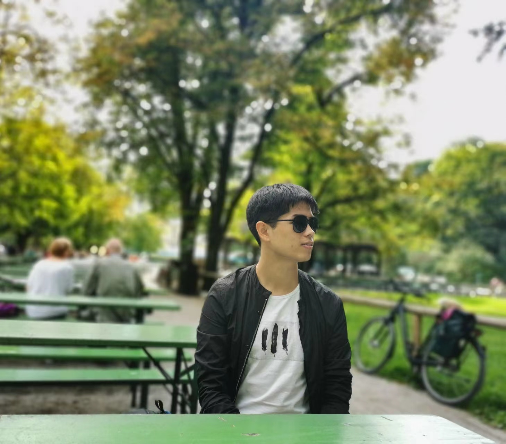

Junxing HuPh.D. StudentCenter for Research on Intelligent Perception and Computing (CRIPAC) Institute of Automation, Chinese Academy of Sciences (CASIA) School of Artificial Intelligence, University of Chinese Academy of Sciences Email: junxing.hu@cripac.ia.ac.cn |
 |
Biography
I am a Ph.D. student at CASIA and University of Chinese Academy of Sciences, where I work with Prof. Zhenan Sun and Prof. Yunlong Wang on 3D vision and biometrics.
Before my Ph.D., I obtained my master's degree from the Institute of Software, Chinese Academy of Sciences (ISCAS) in 2020 and my bachelor's degree from the School of Software, Dalian University of Technology (DUT) in 2017.
Publications (show selected / show all)
Honors
- Best Student Paper Award, 2019
- National Scholarship for Postgraduate, 2019
- The First-Tier Scholarship, 2018-2019
- Outstanding Graduate of Liaoning Province, 2017
- Outstanding Graduate of University, 2017
- Outstanding Undergraduate Thesis Award, 2017
- National Scholarship, 2015
| Last update: March 2023 | This template is borrowed from here. |